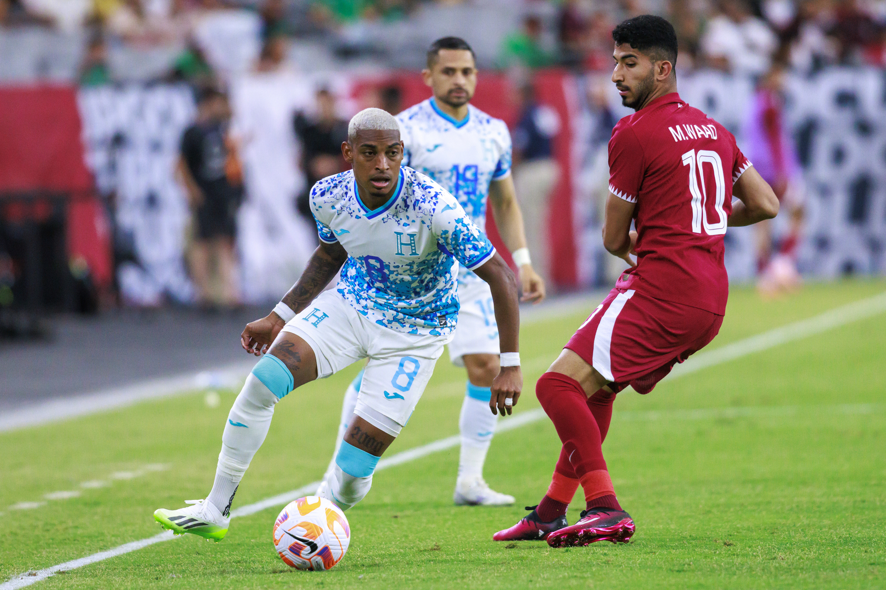
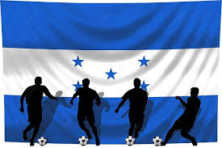

First slide label
No pretendas hacer todo perfecto a la primera, las cosas difíciles llevan su tiempo.

Second slide label
El verdadero fracaso no es perder, sino no atreverse a intentarlo.

Third slide label
“No te midas por lo que has logrado, sino por lo que deberías haber logrado con tu capacidad”

Third slide label
Cuanto más hacemos, más podemos hacer

Third slide label
Puedo porque creo que puedo

Third slide label
La persistencia puede cambiar el fracaso en un logro extraordinario

Third slide label
Tu mayor oponente no es la otra persona. Es la naturaleza humana
¿Qué es Fútbol?
01 de marzo 2024 por Jada Hernndez Amaya El fútbol se define en primer lugar como un juego que incluye dos contrincantes y un árbitro con la capacidad de imponer justicia imparcial. Cada contrincante está compuesto por un equipo de 11 jugadores en campo de juego cada uno, con la opción de incluir jugadores suplentes en el transcurso del partido de fútbol.
El objetivo es hacer rodar un balón esférico con el fin de anotar un punto, cuya anotación es válida al cruzar la línea límite del arco contrario. Cada punto logrado es conocido como gol, por lo tanto el equipo que más goles sume en el transcurso de 90 minutos -tiempo neto de un partido- será el ganador.
Cada equipo deberá de incluir en su plantilla un arquero o portero, único jugador capaz de tocar el balón con las manos y con la tarea de impedir que el balón cruce su propio arco; un grupo de defensores; un grupo de volantes y finalmente un grupo de delanteros. Las tácticas de cada plantilla pueden variar en preferencia del director técnico a cargo del equipo de fútbol.
Historia de futbol en Honduras
La Federación de fútbol de Honduras, tal y como se conoce hoy en día fue creada en 1980. Antes, desde 1951, el fútbol hondureño fue dirigido por la Federación Deportiva Extraescolar de Honduras.
Cuatro años después de que la FENAFUTH fuera creada, se le reconoció oficialmente como el organismo dirigente del fútbol hondureño (1984) y un año después se produjo la primera reunión oficial de la institución.
Principales reglas del fútbol
Saque lateral.
Una vez que el balón haya traspasado una línea lateral, se deberá proceder a tomar el balón con la mano para volver a ponerlo en juego.
Saque de meta
Una vez que el balón haya traspasado la línea frontal, habiendo sido tocada por última vez por un equipo en campo de juego rival, el arquero rival deberá poner el esférico en juego desde su arco.
Tiro de esquina.
Una vez que el balón haya traspasado la línea frontal y haya sido tocado por última vez por un equipo en campo propio, se le concederá al rival reanudar el juego con un saque del balón desde el vértice correspondiente.
Tarjeta amarilla.
Quedará a criterio del árbitro sancionar a un jugador con tarjeta amarilla al cometer un infracción un jugador.
Tarjeta roja.
Un jugador verá la tarjeta roja al recibir dos tarjetas amarillas y deberá abandonar el campo de juego de inmediato. También se puede sancionar con tarjeta roja directa.
Futbolistas
El fútbol hondureño ha sido cuna de jugadores de gran talento, por lo que éstos, han tenido la oportunidad de salir al extranjero y triunfar a lo grande. Tal fue el caso de José Enrique 'La Coneja Cardona, Jorge Urquía, Jorge Bran, Gilberto Yearwood, Roberto Figueroa, y otros en España. Así como Carlos Pavón, y Eugenio Dolmo Flores en México. Y más recientemente: David Suazo, Julio César de León en Italia. Otros, como Eduardo Bennett, Milton Núñez y Danilo Turcios sobresalieron en América del Sur.